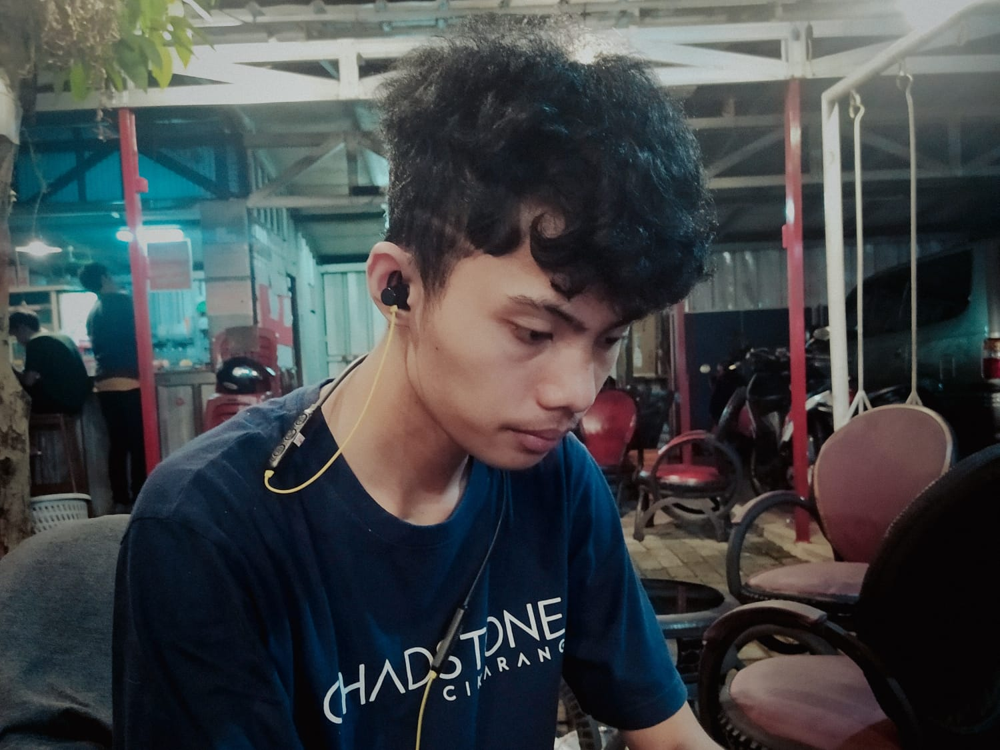

Data Pribadi

Nama : Sultan Rhino Salfriandry
TTL : Karawang, 10 Februari 2002
Alamat : Perumahan Pondok Rawamas Indah Blok AA.1 No.2
No. HP : 089524433444
Jenis Kelamin: Laki-laki
Agama : Islam
Status : Mahasiswa / Pelajar
Email : sultanrhinosalfriandry@gmail.com
link github projek uts web I